Là thiết bị chính tiêu thụ điện năng trong mạch điện. Ví dụ: đèn, motor điện, radio, xông kính,...
Trên Ô tô mạch điện sẽ lấy nguồn dương từ bình ắc quy và dòng điện chạy qua các tải tiêu thụ sau đó trở về cực âm bình ắc quy thông qua mass sườn xe. Các tải tiêu thụ trong một mạch điện có mối liên hệ nhau về giá trị điện áp, dòng điện thông qua định luật ôm.
Tải tiêu thụ được mắc thành 3 kiểu mạch điện khác nhau: Mạch nối tiếp, song song và mạch hỗn hợp.
-
Mắc nối tiếp.
Mạch nối tiếp là mạch điện đơn giản. Dây dẫn, thiết bị điều khiển, thiết bị bảo vệ, tải tiêu thụ, nguồn được nối với nhau chỉ trên một đừơng dẫn đi về mass và cho dòng điện chạy qua. Giá trị điện trở của từng phụ tải có thể khác nhau nhưng dòng tổng I qua từng điện trở không đổi. Điện áp đặt lên từng điện trở sẽ khác nhau. Nếu mạch bị đứt thì không có dòng điện chạy qua và không có bộ phận nào hoạt động.
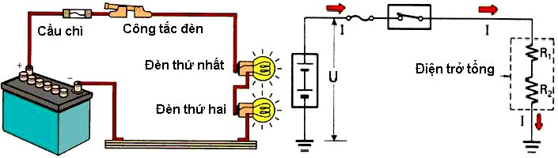
Hình 1.31: Mạch nối tiếp.
-
Mắc song song.
Một mạch song song có nhiều hơn một đường dẫn cho dòng điện chạy qua. Điện áp giống nhau được cấp cho từng nhánh. Nếu điện trở trong từng tải điện giống nhau thì dòng điện qua từng nhánh sẽ giống nhau. Nếu điện trở tải điện trong từng nhánh khác nhau thì dòng điện trong từng nhánh cũng khác nhau. Nếu có một nhánh bị hỏng thì dòng điện vẫn tiếp tục đi qua những nhánh kia.
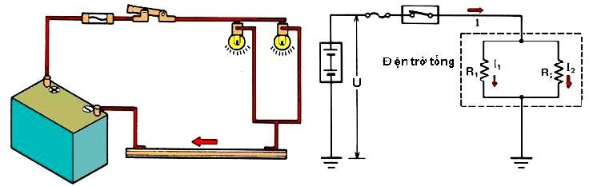
Hình 1.32: Mạch song song.
Mạch song song có nhiều đường dẫn hoặc nhánh về mát.Vì vậy:
-
Với sự số hở mạch một trong các nhánh, thì dòng điện vẫn sẽ tiếp tục đi qua các nhánh còn lại.
-
Mỗi nhánh đều nhận điện áp nguồn.
-
Dòng chạy qua từng nhánh có thể khác nhau.
-
Điện trở của từng nhánh có thể khác nhau.
Khi nối song song, hai hoặc nhiều hơn các điện trở được nối trong mạch như sau, với một điểm đầu của từng điện trở nối chung với phía dương của mạch điện, và một điểm kết thúc nối chung với phía âm của mạch, điện áp nguồn cấp đến toàn điện trở trong mạch nối song song.
-
Mắc hỗn hợp (nối tiếp - song song).
Một mạch hỗn hợp có những bộ phận mắc nối tiếp và song song. Điện nguồn và thiết bị điều khiển hay bảo vệ thường mắc nối tiếp, các tải nối song song. Dòng điện như nhau trên phần mắc nối tiếp và khác nhau tại phần mắc song song. Điện áp cấp khác nhau tại phần mắc nối tiếp và giống nhau tại phần mắc song song. Nếu phần mắc nối tiếp bị hỏng thì dòng điện sẽ không chạy trên toàn bộ mạch. Nếu nhánh mắc song song bị hỏng thì dòng tiếp tục chạy trong phần nối tiếp và các nhánh song song còn lại.
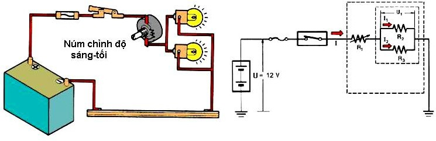
Hình 1.33: Mạch hỗn hợp.
Một điện trở và đèn có thể được nối nhau như trong hình minh họa.
Kiểu nối này gọi là hỗn hợp, là sự kết hợp của nối tiếp và song song. Bằng việc tăng hoặc giảm biến trở, có thể điều chỉnh độ sáng của đèn.
-
Hệ thống dây dẫn và phương pháp kiểm tra mạch điện Ô tô.
Các bản vẽ hệ thống điện Ô tô đều thể hiện quan hệ giữa các bộ phận, dây dẫn, các giắc nối, các rơ le, v.v.. từ nguồn điện đến điểm nối mát của mỗi hệ thống.
Mỗi giắc nối và chân cắm được quy định bằng một mã và số hiệu. Tìm mã và số hiệu trên bản vẽ trong chẩn đoán sự cố sẽ tìm được vị trí của giắc nối và chân cắm trong thực tế.
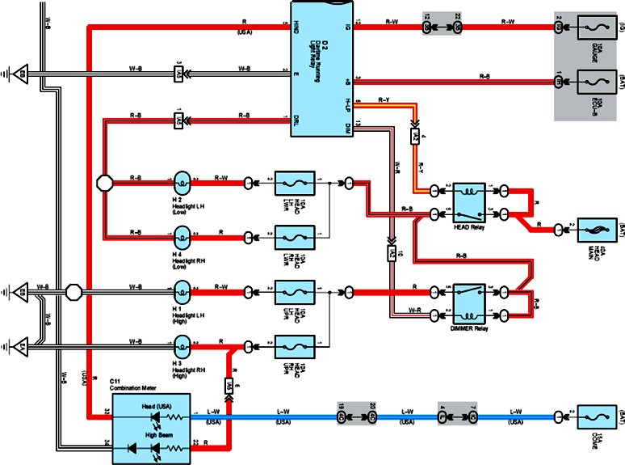
Hình 1.34: Sơ đồ hệ thống mạch điện Ô tô trên bản vẽ.
- Giắc nối.
Nhiệm vụ nối các dây dẫn lại với nhau
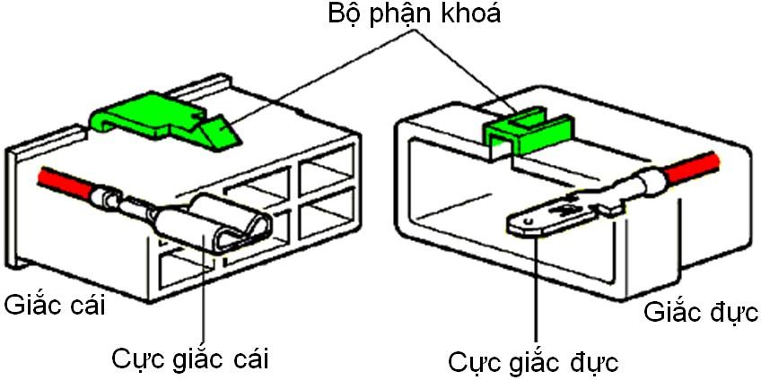
Hình 1.35: Giắc nối.
Các chân cắm gồm có các chân “đực” và chân “cái”, trong đó các chân đực được cắm vào các chân cái. Các giắc nối có các chân đực được gọi là giắc đực, và các giắc nối có các chân cái được gọi là giắc cái. Các giắc nối có khóa để bảo đảm cho giắc nối được nối vững chắc.
Phần khóa của giắc nối hướng lên trên khi đọc các số chân. Vị trí đọc trên bề mặt của mối nối, các số này được đọc từ phần trên bên trái đối với giắc cái, và phần trên bên phải đối với giắc đực.
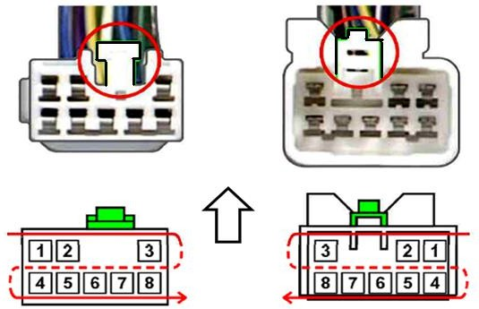
Hình 1.36: Vị trí đọc số chân.
Ký hiệu giắc trên sơ đồ bản vẽ.
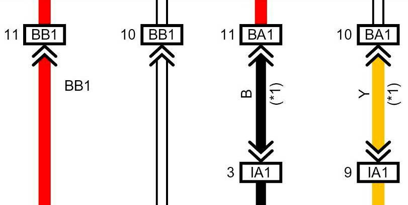
Hình 1.37: Ký hiệu giắc trên sơ đồ bản vẽ.
Các chữ - số trong hình chữ nhật (BB1) thể hiện mã của giắc nối, số ở bên ngoài hình chữ nhật (11) thể hiện số chân cắm. Ký hiệu (^ ) chỉ rõ bên giắc đực.
-
Giắc đấu dây.
Nhiệm vụ đấu nhiều đầu dây dẫn cùng cực lại với nhau.
Cấu tạo gồm có vỏ hộp và các cực nối nhiều dây dẫn với nhau.
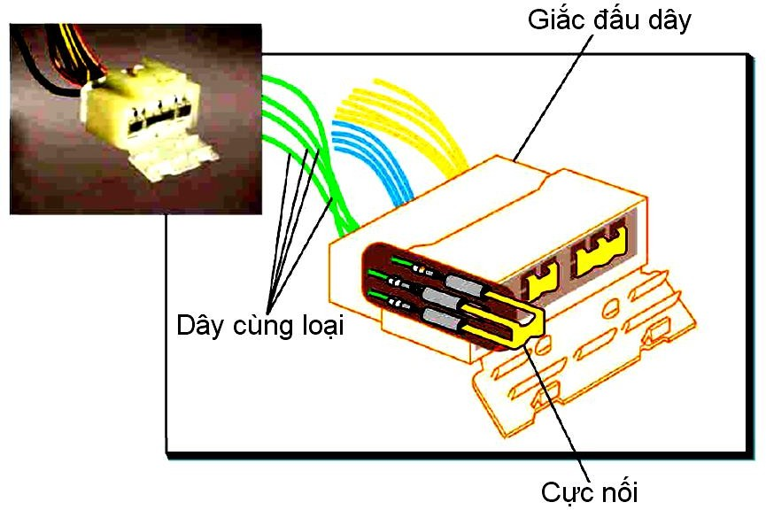
Hình 1.38: Cấu tạo giắc đấu dây.
- Hộp đầu nối.
Hộp đầu nối có chức năng tập hợp và nối các mạch điện ở bên trong hộp tổ hợp các rơ le, các cầu chì, các cầu dao cắt mạch, v.v.., thành các tấm mạch.
Một số bộ phận của hộp đầu nối không chứa các rơle, cầu chì, v.v..., mà chỉ dùng làm một giắc nối. Hộp rơ le có cấu tạo gần giống với cấu tạo của hộp đầu nối, nhưng nó không tập hợp và nối các mạch điện ở bên trong hộp
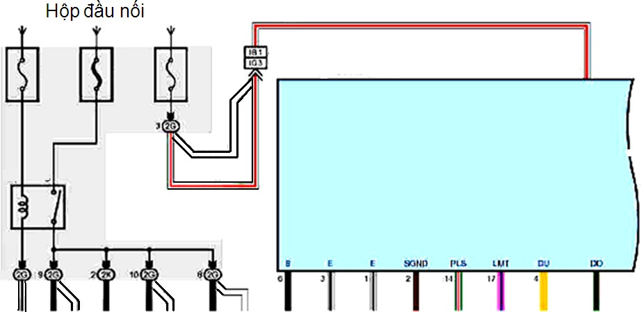
Hình 1.39: Hộp đầu nối trên sơ đồ.
- Các điểm chia và điểm nối mát.
Điểm chia nối vào dây không phải đi qua một giắc nối. Điểm tiếp mát nối dây với thân xe hoặc động cơ, v.v...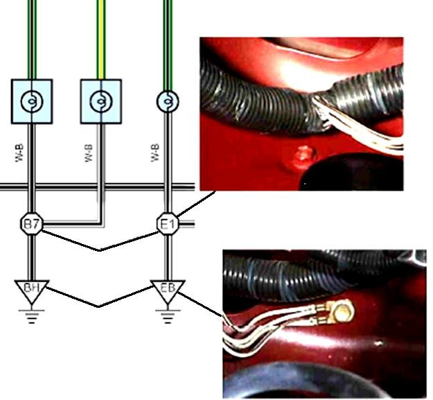
Hình 1.40: Các điểm chia và điểm nối mát.
-
Màu dây dẫn.
Các chữ cái thể hiện màu của dây. Các màu của dây cũng bao gồm cả các màu có sọc. Các màu này được thể hiện bằng chữ (L-Y), chữ đầu tiên là chữ viết tắt của màu nền của dây và chữ thứ hai viết tắt cho màu sọc.
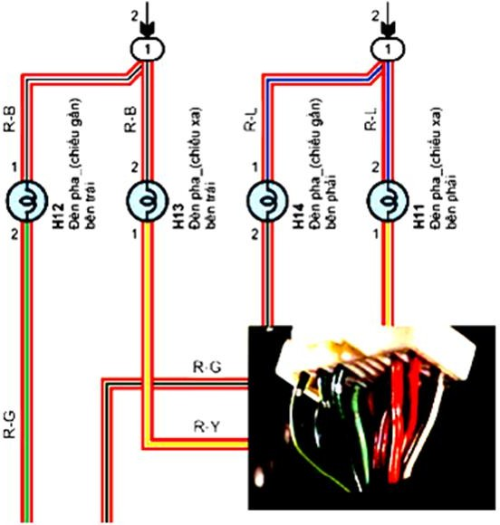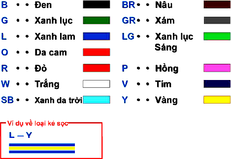
Hình 1.41: Màu của dây dẫn.
-
Các hư hỏng và phương pháp kiểm tra mạch điện.
+ Mạch hở.
Một thiết bị điện hoạt động bình thường nếu mạch dẫn điện tốt. Điện áp ở các giắc nối tốt.
Có thể xác định khu vực có sự hỏng hóc bằng cách đo điện áp của mạch điện tại vị trí các giắc nối.
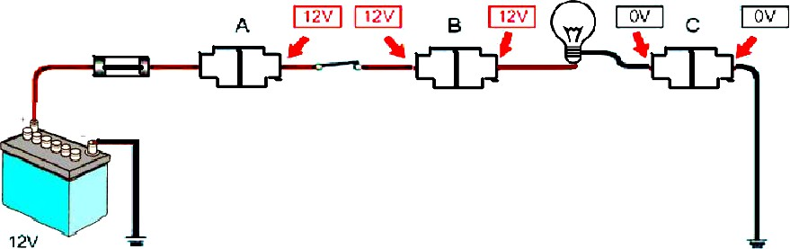
Hình 1.42: Điện áp của mạch điện tại vị trí các giắc nối.
Xác định khu vực có sự cố
Giả sử một mạch điện có một bóng đèn không sáng (hoặc một thiết bị điện không làm việc bình thường) như hình vẽ 1.42.
Bằng cách đo điện áp ở mỗi khu vực, phát hiện không có điện áp ở sau đầu nối A (hoặc C). Cho thấy nguồn điện bị gián đoạn ở giắc nối A (hoặc C). Loại hư hỏng này được gọi là mạch hở.
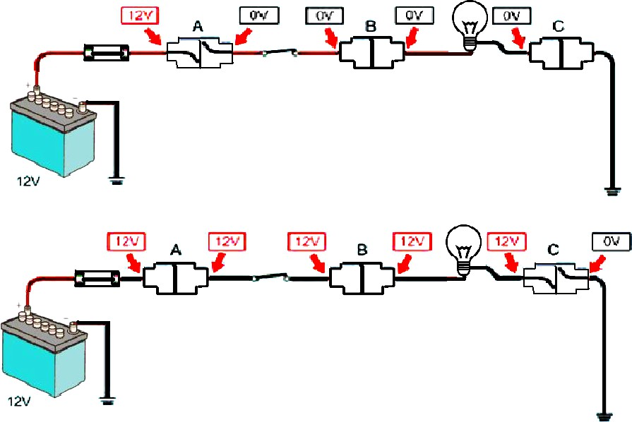
Hình 1.43: Phương pháp đo điện áp xác định khu vực có sự cố.
+ Mạch tiếp xúc kém.
Khi đóng mạch bóng đèn sáng lên. Nếu bóng đèn sáng mờ, trong mạch có điểm tiếp xúc kém.
Xác định khu vực có sự cố
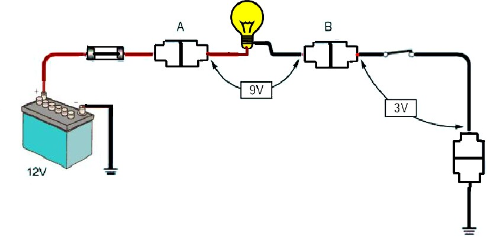
Hình 1.44: Phương pháp đo điện áp xác định khu vực tiếp xúc kém.
Sử dụng vôn kế kiểm tra điện áp ở đầu của bóng đèn trong mạch, nếu điện áp thấp (9V), điện áp bình thường tại đầu của bóng đèn sáng là 12V. Vì vậy chắc chắn trong mạch điện có vị trí gây sụt áp (Vì dòng điện trên Ô tô là dòng điện một chiều). Sau đó kiểm tra điện áp tại các phần tử kế tiếp phát hiện tại vị
trí công tắc có điện áp 3V. Điều này cho thấy rằng công tắc có điện trở, có thể do tiếp xúc kém.
+ Đoản mạch / ngắn mạch.
Giả sử rằng cầu chì đã bị cháy trong mạch như sơ đồ, kiểm tra nguyên nhân của cầu chì bị cháy.
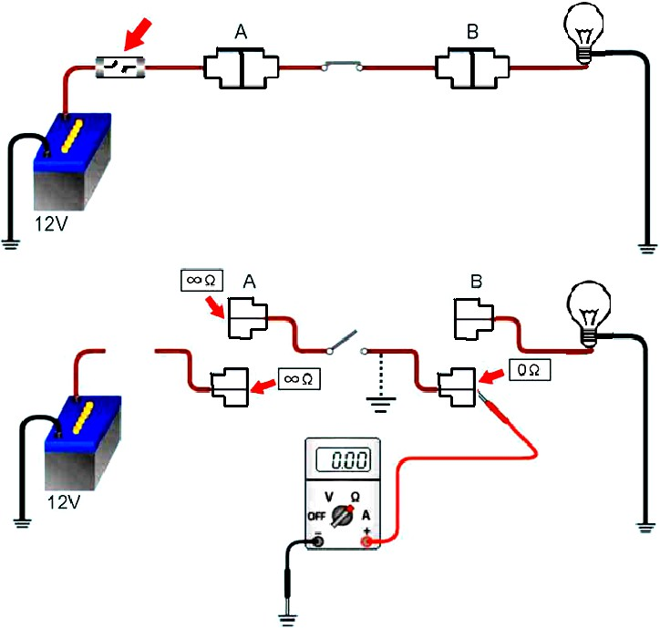
Hình 1.45: Phương pháp đo đoản mạch / ngắn mạch.
Xác định khu vực có sự cố
Chức năng của cầu chì tránh cho dây điện hoặc thiết bị không bị hư hỏng bằng cách làm hở mạch do cầu chì bị nóng lên chảy ra khi cường độ quá mức cho phép. Vì vậy trong mạch điện có cường độ quá mức đã chạy qua (Vì đây là mạch của dòng điện một chiều, trong đó điện áp không thay đổi giữa các phần tử của mạch điện), có thể nguyên nhân là đoản mạch giữa dây dẫn và dây mát gây ra.
Tiến hành đo điện trở giữa các giắc nối và điểm nối mát, đã phát hiện điện trở 0 tại giắc nối B. Điều này cho thấy giắc nối B đã nối tắt với phần tiếp đất, gây ra cường độ quá mức chạy qua mạch điện.